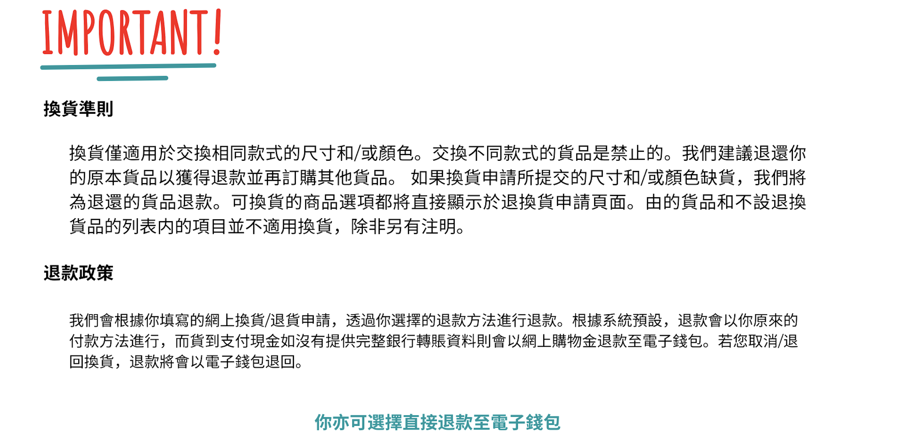

常見問題
☎追蹤訂單
追蹤訂單方法如下:
1.輸入訂單號碼（九位數字）
2.如包裹經已寄出，將提供實時追蹤連結，讓你查看訂單狀態等詳細資料。
❌取消訂單
只要您的訂單尚未包裝，客服人員便可以協助您取消訂單。倘若您的訂單已包裝，則請恕我們已來不及在系統内為您取消訂單。若您仍需要取消訂單，請參考以下做法：
做法（一）：若您的訂單是貨到付款或購買不可退換的商品，請您在快遞人員派送包裹時直接拒絕簽收包裹，並告知該快遞員您已通知客服取消訂單。
做法（二）：您可以在簽收包裹之後再申請退貨，並選擇 退款 或 換貨。但請務必確認您的商品非不設退換貨的商品。若您是購買不設退換的商品，請參考做法（一） 。
重要提醒:
若您的訂單已預付，退款將在訂單取消成功後的一個工作日内處理。若是拒收包裹或是申請退貨，退款則在包裹退回倉庫之後處理。退款將按照各付款方式處理的時效顯示在您的賬戶内。
❗辦理退貨


✈追蹤退貨
- 順豐站退貨
- Circle K
- 上門提取退貨
請注意，只有指定順豐站退貨/智能櫃可以接受您的退貨，包裹會需要3-5個工作天才送抵我們的貨倉。
記下您電子郵件中的追蹤號碼。透過Circle K退貨時，包裹會需要3-5個工作天才送抵我們的貨倉。
退貨追蹤號碼將會在快遞人員獲取包裹後提供給您。包裹會需要1-2個工作天才送抵我們的貨倉。。
🗓退貨及換貨處理時間
- 退貨
- 換貨
- 退款
順豐退貨包裹將在3-5個工作天內抵達貨倉。
倉庫部門收到您的退貨包裹後將依序為您處理換貨，新的換貨將按照原訂單所預估的派送時間處理。請您留意系統電郵以便得知最新的退換貨進度。
一切退款將按照訂單的原付款方式退款，除了貨到付款的訂單將以系統預設的購物方式退款。針對貨到付款的訂單，若您提交的銀行轉帳資料不完整，一律將以購物金方式退款。
📑退貨政策
